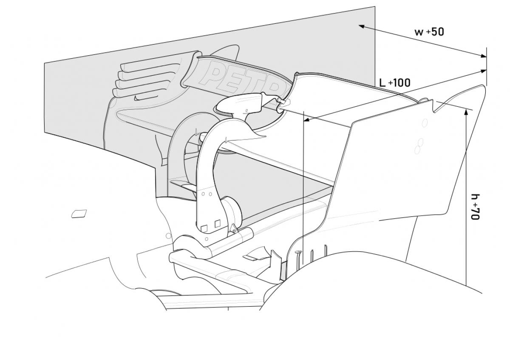
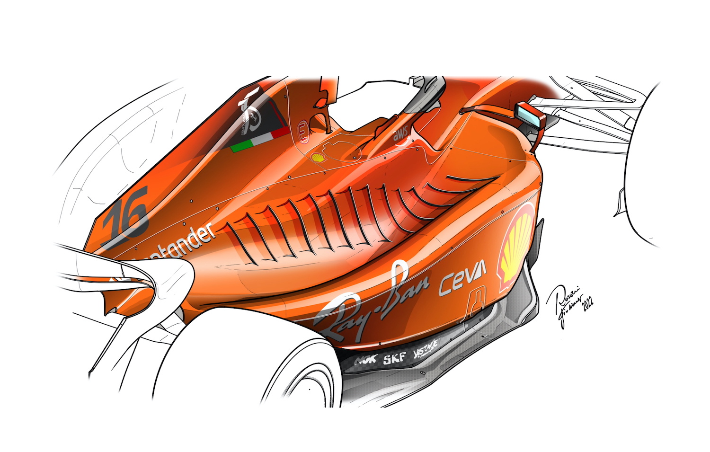

These six parts - suspension, front wing, rear wing, sidepods, chassis, and underfloor - are integral to the performance and aerodynamic efficiency of a Formula 1 car. Their design, materials, and integration are optimized to push the boundaries of speed, handling, and downforce in the pursuit of on-track dominance.
Suspension: The suspension system of a Formula 1 car is crucial for handling and stability. It consists of
various components, including wishbones, pushrods, dampers, and springs. The suspension absorbs bumps and
vibrations, optimizing tire contact with the track for improved grip and maneuverability. Teams can adjust
the suspension settings to fine-tune the car's response to different track conditions and driving styles.
Front Wing: The front wing is a prominent aerodynamic component located at the front of the car. It
generates downforce and directs the airflow around the tires and along the car's sides. The design of the
front wing is critical for achieving the right balance between downforce and minimizing drag. Teams
carefully sculpt the front wing to optimize performance, aiding in cornering stability and overall grip.
Rear Wing: The rear wing is another key aerodynamic feature. Positioned at the back of the car, it generates
downforce to increase traction and stability, especially during high-speed cornering and braking. The angle
and shape of the rear wing can be adjusted by the driver or the team during pit stops to adapt to different
track conditions, allowing for a fine balance between straight-line speed and cornering performance.

Sidepods: The sidepods are aerodynamic elements positioned on either side of the car, alongside the driver's
cockpit. They play a vital role in managing the airflow around the car, improving overall aerodynamic
efficiency. The sidepods often house the car's cooling systems, including radiators for engine and gearbox
cooling. The design of the sidepods affects both performance and packaging considerations within the car.

Chassis: The chassis serves as the central structure of the Formula 1 car. It provides rigidity and strength
while accommodating various components. Constructed mainly from carbon fiber composite materials, the
chassis protects the driver and supports other parts like the suspension, power unit, and aerodynamic
components. It is designed to be lightweight yet robust to withstand the forces encountered during racing.
Underfloor: The underfloor of a Formula 1 car is a crucial aerodynamic feature. It extends from the front of
the car to the rear, underneath the chassis. The underfloor is designed to generate significant downforce by
channeling the airflow efficiently. It incorporates intricate diffuser elements to accelerate the air
beneath the car, creating a low-pressure zone that helps suck the car onto the track surface, enhancing grip
and stability.